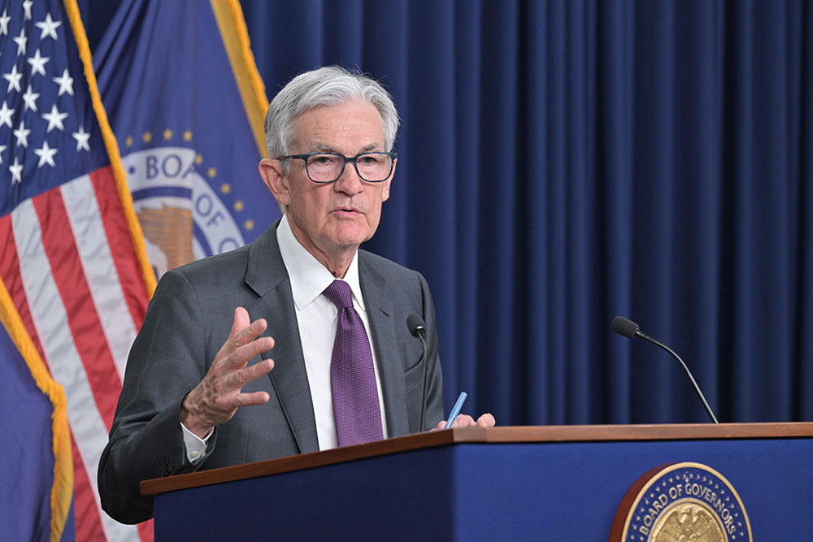

6월
6월 3일
트럼프, 철강 관세 25% → 50% 행정명령 서명
도널드 트럼프 미국 대통령이 수입산 철강·알루미늄 관세를 기존 25%에서 50%로 인상하는 행정명령에 서명했다. 이 조치는 6월 4일부터 시행되며, 미국 철강·알루미늄 산업과 노동자 보호를 이유로 제시됐다. 백악관은 무역대표부(USTR)가 주요 교역국에 6월 4일까지 최선안을 제시하라는 서한을 발송했다고 밝혔다.
6월 5일
에너지 투자 및 원유는 감소, 청정에너지는 사상 최대
국제에너지기구(IEA)는 2025년 세계 에너지 투자액이 3조 3,000억 달러로 사상 최대를 기록할 것이라며, 그중 3분의 2인 2조 2,000억 달러가 청정에너지에 투입될 것으로 전망했다. 반면 원유·가스 탐사·개발 투자는 10년 만에 처음으로 감소할 것으로 예측됐다. 중국은 전 세계 청정에너지 투자에서 3분의 1을 차지하나 개발도상국은 자본 조달에 어려움을 겪어 국제적 지원이 필요하다고 IEA는 강조했다.
6월 12일
美, 가전제품에도 철강 관세 적용… 한국 기업 직격탄 우려
미국 상무부가 23일부터 냉장고·세탁기·식기세척기 등 8종 가전제품에 철강 파생제품 관세(25%)를 부과하기로 했다. 이는 철강 함량 가치를 기준으로 매겨지는 조치로, 기존 철강·알루미늄 관세 확대의 일환이다. 삼성전자와 LG전자는 미국 내에서 일부 제품을 생산하고 있지만 한국·멕시코 등지에서 생산한 제품도 미국에 수출하고 있어 관세 영향을 받을 것으로 전망된다.
6월 13일
이스라엘, 이란 핵·군사 시설 전격 공습
이스라엘이 13일 새벽 테헤란을 포함한 이란 핵 및 군사 시설을 대규모 공습하며 중동 정세가 급변했다. 이란은 즉각 전투기를 출격시켜 대응에 나섰고, 이스라엘은 전역에 특별비상사태를 선포했다. 미국은 이번 공습에 관여하지 않겠다고 선을 그었으며, 국제 유가는 6% 급등했다.
6월 19일
러시아, 전쟁 후 첫 경제 위기 인정
영국 파이낸셜타임스는 러시아 막심 레셰트니코프 경제개발장관이 상트페테르부르크 국제경제포럼(SPIEF)에 참석해 러시아 경제 위기를 공개 인정했다고 전했다. 국방비 확대와 군수 산업 호조로 버텨 왔지만 물가 상승(9.8%)과 수요 부진, 고금리 부담이 한계에 다다른 상황이다. 정체된 유가도 부담을 키우는 가운데 푸틴 대통령은 18일 경제 각료들과 만난 자리에서 “경제 성장과 구조 변화의 균형 유지”를 주문한 것으로 알려졌다.

6월 23일
AI가 만든 새로운 ‘디지털 격차’
뉴욕타임스는 AI 확산이 국가 간 새로운 디지털 격차를 만들고 있다고 보도했다. 전 세계 AI 데이터센터의 절반 이상이 미국·중국·EU에 집중돼 있으며, 미국 기업(아마존·MS·구글 등)이 전체 컴퓨팅 허브의 3분의 2를 장악하고 있다. 반면 아프리카와 남미는 사실상 AI 컴퓨팅 인프라가 전무해 과학 연구, 스타트업 성장, 인재 확보 등에서 불리한 상황이다. 전문가들은 “AI 시대의 석유는 컴퓨팅 능력”이라며 이 격차가 글로벌 권력 재편과 의존 관계를 심화시킬 것이라고 지적했다.
7월
7월 7일
상호관세 유예 종료, 8월 1일부터 새 관세율 적용
미국의 상호관세 유예 기간이 7월 8일 종료되면서 트럼프 대통령은 12~15개국에 새로운 관세율을 담은 서한을 발송했다. 관세는 8월 1일부터 발효될 예정이었지만 미 행정부는 그때까지 재협상 가능성을 열어 두며 압박 수단으로 활용했다. 국가별 세율은 10~70%로 예고됐으며, 반미 정책에 동조하는 브릭스(BRICs) 국가들에는 일괄적으로 10% 추가관세가 부과된다고 밝혔다.
7월 15일
日-EU ‘경쟁력 연합’ 출범
일본과 EU가 23일 도쿄에서 정상회담을 열고 ‘경쟁력 연합’(Competitiveness Alliance)을 발족해 경제·무역·방위산업 협력을 강화하기로 했다. 양측은 LNG 공급 안정, 방위산업 연계 강화 등과 함께 소형 위성을 다수 연계한 ‘위성 컨스텔레이션’(Satellite Constellation)을 구축하는 협력도 추진했다.
7월 19일
日 간사이전력, 후쿠이현에 새 원전 건설 검토
일본 간사이전력이 후쿠이현 미하마 원전 부지에 새 원전을 짓는 방안을 검토했다. 이는 2011년 후쿠시마 제1원전 사고 이후 중단됐던 신설 계획을 재개하는 움직임으로, 노후 원전 대체와 장기적 전력 수급 확보가 목적이다. 일본 정부는 올해 원전 활용 확대 방침을 세우고 기존 부지를 활용한 차세대형 원자로 건설을 추진한다는 방침도 정했다.
7월 23일
트럼프 행정부, ‘AI 행동계획’ 발표
트럼프 행정부가 AI 개발에서 안전성보다 중국에 대한 우위를 우선시하는 ‘AI 행동계획’을 발표했다. 각 주에는 AI 인프라 허가 절차 간소화와 환경 규제 완화를 권고하고, 규제가 심한 주에는 연방 자금 지원을 중단하기로 했다. 트럼프 대통령은 바이든 정부 시절의 ‘안전한 AI’ 행정명령을 철회하고, 6개월 내 새로운 AI 정책 방향을 마련할 것을 지시했다.
7월 27일
美-EU 무역 협정 타결
미국과 EU가 관세 협상 시한을 앞두고 무역 협정을 전격 타결하며 글로벌 경기 침체 우려가 크게 줄었다. 이번 합의로 EU산 자동차 관세는 기존 27.5%에서 15%로 낮아지고, 항공기·반도체 장비·농산물 등 일부 품목은 무관세가 적용된다. 대신 EU는 향후 3년간 미국산 에너지 7,500억 달러 구매와 6,000억 달러 추가 투자, 군사 장비 구매를 약속했다.
7월 31일
트럼프, 우회 수출 차단·중국 견제 강화
트럼프 미국 대통령이 90일 유예 기간 종료 후 8월 7일부터 발효될 새로운 상호관세를 공개했다. 국가별 관세율은 10~41%로 책정됐으며, 이미 선적된 화물은 10월 5일까지 기존 관세가 적용된다. 특히 미국은 중국의 우회 수출 관행을 겨냥해 국토안보부와 관세청이 6개월마다 관련 국가·기업 명단을 실명 공개하고, 적발 시 최고 40% 관세와 벌금을 부과하기로 했다.
8월
8월 23일
中, 디플레이션 위기 10년 전 해법 통하지 않아
시진핑 중국 국가주석이 10년 전처럼 대규모 투자와 공급 억제로 디플레이션 위기를 넘기려 하지만 현재는 가계 수요 약화와 부채 급증으로 같은 방식이 통하지 않는다는 지적이 제기됐다. 중국의 총부채는 GDP 대비 300% 이상으로 치솟아 대규모 경기 부양 여력이 제한적이며, 정책 금리도 낮아 추가 인하 여지도 적다. 전문가들은 투자·생산 대신 소비 진작을 유도하는 인센티브 개편과 가계 소득 이전 같은 구조 개혁이 필요하다고 강조했다.
8월 23일
파월 연준 의장, 9월 금리 인하 시사
도널드 트럼프 미국 대통령은 전임 바이든 행정부가 국가안보 우려로 불허했던 일본 제철의 미국 철강업체 US스틸 인수를 승인했다. 트럼프는 이번 협력이 미국 내 7만 개 일자리 창출과 140억 달러의 경제 효과를 가져올 것이라며 펜실베이니아 역사상 최대 투자라고 강조했다. 이는 일본 제철이 과반 지분이 아닌 소수 지분 투자를 제안하며 트럼프 행정부의 승인 조건을 충족한 결과로 해석된다.

8월 27일
美, 인도산 제품에 50% 보복관세 부과
트럼프 행정부가 27일부터 인도산 제품에 50% 보복관세를 부과하기 시작했다. 이는 인도의 러시아산 원유 수입 확대와 미국산 농산물 관세 문제로 협상이 결렬된 데 따른 조치다. 인도는 러시아산 원유의 경쟁력을 이유로 반발하고 있으며, 이번 관세는 미국이 아시아 교역국에 부과한 최고 수준으로 인도의 대미 수출 경쟁력에 타격이 예상된다. 다만 인도 경제가 내수 의존도가 높아 충격은 제한적일 수 있다는 분석도 나왔다.
8월 27일
러시아, 우크라 중부까지 진격
러시아군이 도네츠크·자포리자 등 동부 전선을 넘어 중부 드니프로페트로우스크 지역으로 진입하며 전선을 확대했다. 우크라이나는 처음으로 해당 지역 내 영토 상실을 공식 인정했으며, 이곳은 중공업 중심지로 전략적 가치가 큰 지역이다. 트럼프 미국 대통령은 종전 합의가 이뤄지지 않을 경우 러시아에 강력한 경제 제재를 가하겠다고 경고했다. 한편 미국은 전후 안보 보장을 위해 정보 및 대공 방어 자산 등 전략적 지원을 우크라이나에 제공할 준비가 됐다고 밝혔다.
8월 29일
美 연방항소법원 “트럼프 상호관세, IEEPA 권한 넘어 불법”
미국 연방항소법원이 트럼프 대통령이 국제비상경제권법(IEEPA)을 근거로 부과한 상호관세가 권한을 초과한 불법이라고 판결했다. 이에 따라 중국·캐나다·멕시코 등에 부과된 ‘상호관세’와 ‘펜타닐 관세’가 위법으로 판단됐다. 재판부는 다만 이번 판결로 인한 혼란과 트럼프 행정부의 상고가 예상되는 상황을 고려해 관세를 10월 14일까지 유지하도록 했다. 이번 판결은 철강·알루미늄 등 무역확장법 232조를 근거로 한 품목 관세에는 영향을 미치지 않는다. 트럼프 대통령은 판결 직후 “모든 관세는 유효하다”며 대법원 상고 의사를 밝혔다.